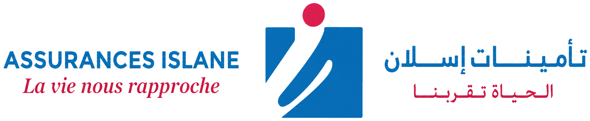

حافظوا على صحتكم وحضروا للمستقبل.
عروض الصحة، الاحتياط، التقاعد الفردي أو الجماعي وضمانات الحماية العائلية.
تغطية تحتاج إلى ضبط
مستوى التعويض، السقوف، الآجال والاستثناءات يجب أن تناسب وضعيتكم.

تأمينات إسلانعروض الصحة، الاحتياط، التقاعد الفردي أو الجماعي وضمانات الحماية العائلية.
مستوى التعويض، السقوف، الآجال والاستثناءات يجب أن تناسب وضعيتكم.